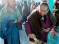

поиск
ИСКАЛИ - ПАСХА
Дерево
- Светлое Христово Воскресение. Пасха.
- Пасхальное послание Святейшего Патриарха Московского и Всея Руси Кирилла.
- Пасхальное послание Архиепископа Казанского и Татарстанского Анастасия.
Всего - 3
Документы
-
1. таинство причастия
.. и многодневные посты, во время Светлой пасхальной седмицы телесный пост перед причастием, как правило, полностью отменяется. 9. Участие в богослужении и домашняя молитва. Так как храмовое богослужение позволяет лучше подготовиться к литургии ...
-
2. таинство причастия
.. и многодневные посты, во время Светлой пасхальной седмицы телесный пост перед причастием, как правило, полностью отменяется. 9. Участие в богослужении и домашняя молитва. Так как храмовое богослужение позволяет лучше подготовиться к литургии ...
-
3. таинство причастия
.. и многодневные посты, во время Светлой пасхальной седмицы телесный пост перед причастием, как правило, полностью отменяется. 9. Участие в богослужении и домашняя молитва. Так как храмовое богослужение позволяет лучше подготовиться к литургии ...
-
4. таинство причастия
.. и многодневные посты, во время Светлой пасхальной седмицы телесный пост перед причастием, как правило, полностью отменяется. 9. Участие в богослужении и домашняя молитва. Так как храмовое богослужение позволяет лучше подготовиться к литургии ...
Всего - 3
-
Православие в татарстане

В селе Старые Кутуши освятили купола
В селе Старые Кутуши освятили купола
Перейти ко всем новостям...
В селе Старые Кутуши освятили купола
-
Новости Патриархии

В селе Старые Кутуши освятили купола

В Москве пройдет пресс- конференция «Рождественский пост и новогоднее застолье — как совместить?»
Перейти ко всем новостям...
В селе Старые Кутуши освятили купола